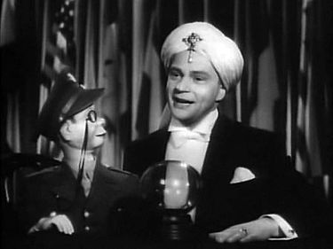

The Art of Ventriloquism
A person who can speak or utter sounds so that they seem to come from somewhere else, especially an entertainer who makes their voice appear to come from a dummy of a person or animal.
Ventriloquism, or ventriloquy, is an act of stagecraft in which a person (a ventriloquist) changes his or her voice so that it appears that the voice is coming from elsewhere, usually a puppeteered "dummy". The act of ventriloquism is ventriloquizing, and the ability to do so is commonly called in English the ability to "throw" one's voice.Originally, ventriloquism was a religious practice.[1] The name comes from the Latin for to speak from the stomach, i.e. venter (belly) and loqui (speak).[2] The Greeks called this gastromancy (Greek: εγγαστριμυθία). The noises produced by the stomach were thought to be the voices of the unliving, who took up residence in the stomach of the ventriloquist. The ventriloquist would then interpret the sounds, as they were thought to be able to speak to the dead, as well as foretell the future. One of the earliest recorded group of prophets to use this technique was the Pythia, the priestess at the temple of Apollo in Delphi, who acted as the conduit for the Delphic Oracle. One of the most successful early gastromancers was Eurykles, a prophet at Athens; gastromancers came to be referred to as Euryklides in his honour.[3] In the Middle Ages, it was thought to be similar to witchcraft. As Spiritualism led to stage magic and escapology, so ventriloquism became more of a performance art as, starting around the 19th century, it shed its mystical trappings. Other parts of the world also have a tradition of ventriloquism for ritual or religious purposes; historically there have been adepts of this practice among the Zulu, Inuit, and Māori peoples.[3]
